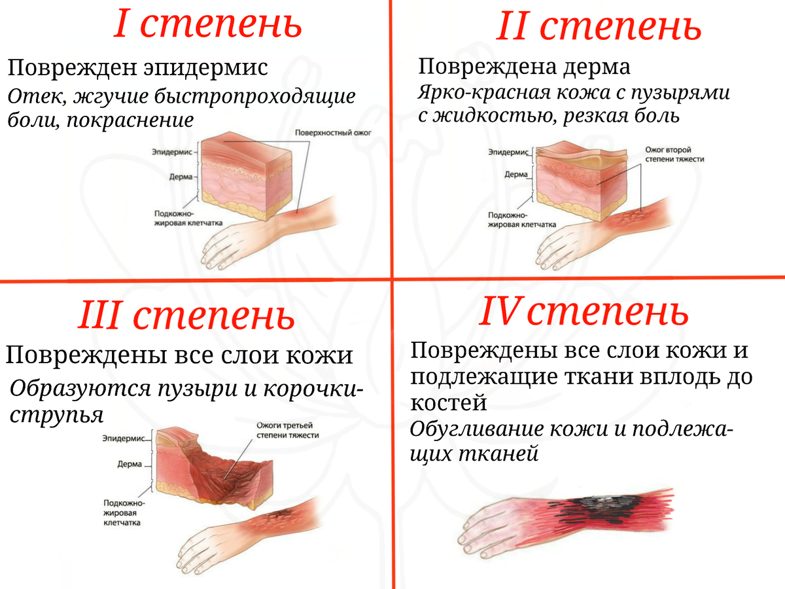

🔥 Тема 4. Первая помощь при ожогах и их признаки
Признаки ожогов
- Ожоги — это повреждения кожи и тканей, возникающие при воздействии высоких температур, химических веществ или электрического тока.
- Основные признаки ожогов:
- Покраснение и отечность кожи;
- Образование пузырей или язв;
- Боль в области повреждения;
- В тяжелых случаях — обугливание тканей.
Типы ожогов
- Ожоги 1 степени: Поверхностные ожоги с покраснением и легким отеком. Обычно проходят без длительных последствий.
- Ожоги 2 степени: Возникают пузыри, сильная боль и отечность. Может потребоваться медицинская помощь.
- Ожоги 3 степени: Глубокие повреждения, при которых кожа может быть обугленной или изъязвленной. Требуется срочная медицинская помощь.
- Ожоги 4 степени: Повреждение всех слоев кожи и глубоких тканей, включая мышцы и кости. Это критическое состояние, требующее неотложной медицинской помощи.

Первая помощь при ожогах
- 1. Прекратить контакт с источником ожога: Уберите пострадавшего от источника тепла (огонь, горячая поверхность, химические вещества и т.д.).
- 2. При небольшом ожоге, охлаждить его: Охладите пораженную область под холодной проточной водой (не менее 10-20 минут), чтобы снизить температуру кожи и уменьшить боль.
- 3. Защита от загрязнений: Покройте ожог стерильной или чистой тканью, чтобы защитить от загрязнений. Не накладывайте льда или слишком холодной воды, так как это может усугубить состояние. Одежду в местах ожога лучше разрезать и наложить вокруг ожога асептическую повязку,⚠️ вату при этом накладывать нельзя.
- 4. Применение кремов и мазей: Если ожог незначительный (1 или 2 степени), можно использовать специальный крем для ожогов (например, с пантенолом) для снижения воспаления и ускорения заживления.
- 5. Обезболивание: Если боль сильная, можно дать пострадавшему обезболивающее средство, например, парацетамол или ибупрофен. Не применяйте народные средства, такие как масло или зубная паста, на ожог!
- 6. Ожоги 3-4 степени: При сильных ожогах обязательно срочно вызывайте скорую помощь. Не пытайтесь сами лечить глубокие ожоги, они требуют специализированного медицинского ухода.
⚠️ Важно: не вскрывайте пузыри при ожогах, так как это может привести к инфицированию и ухудшению состояния.
Что не следует делать при ожогах
- Не вскрывайте пузыри и не пытайтесь очистить рану самостоятельно.
- Не наносите масла, жирные кремы или зубную пасту на ожоги — это может только ухудшить состояние.
- Не используйте лед напрямую на ожог — это может привести к дополнительным повреждениям кожи.
- Не пытайтесь лечить ожоги 3 и 4 степени самостоятельно. В этих случаях нужно срочно обращаться за медицинской помощью.
- Cнимать остатки одежды с ожоговой поверхности.
Ожоги химического происхождения
- Если ожог произошел из-за химического вещества, немедленно смойте его с кожи большим количеством воды.
- Не пытайтесь нейтрализовать химическое вещество с помощью других химикатов — это может вызвать еще более сильное повреждение.
- Снимите загрязненную одежду, которая могла впитаться химикатами.
- Обратитесь в медицинское учреждение для дальнейшего обследования и лечения.
Первая помощь при термических ожогах от огня
- Если пострадавший загорелся, приучите его оставаться в спокойствии, не бегать, чтобы огонь не распространялся.
- Покрыть пострадавшего полотенцем или одеждой, чтобы остановить горение. Используйте воду, чтобы залить огонь (если пострадавший не находится в опасной близости от электрических объектов).
- Если пламя не удается потушить, вызовите экстренные службы и ждите их прибытия.